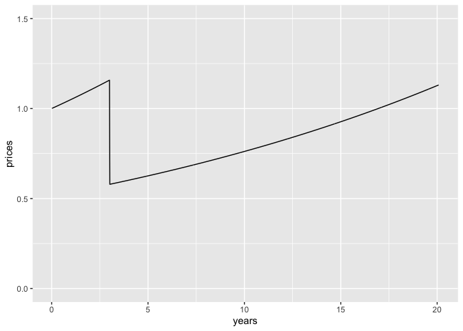
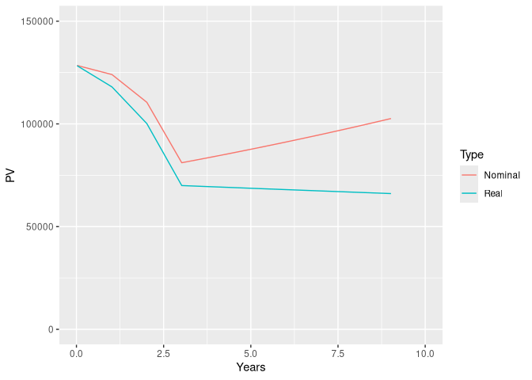

The goal of dynacem is to evaluate present values and cost-effectiveness with dynamic pricing and uptake.
Through the dynpv() function, the package provides for the present value of costs, life years, QALYs or other payoffs in the cost-effectiveness model to be recalculated so as to allow for dynamic uptake (also known as multiple cohorts) and dynamic (also known as life-cycle) pricing. The starting point is a conventional cohort cost-effectiveness model, such as one computed using the heemod package.
Installation
You can install the development version of dynacem from GitHub with:
install.packages("pak")
pak::pak("MSDLLCpapers/dynacem")Example
Some example present value calculations are provided below for a single payoff. A typical cost-effectiveness model may involve several separate payoffs, for each intevention modeled, each with their own price index and discount rate.
Obtain payoffs vector
In this case, we call out the drug acquisition cost of the new intervention (cost_daq_new), the total cost (cost_total) and QALYs (qaly) accumulated in each timestep. The get_dynfields() function will also calculated ‘rolled-up’ values as at the start of each timestep rather than discounted to time zero.
# Load the dynacem package
library(dynacem)
library(ggplot2)
library(tidyr)
# Review oncpsm model (heemod object)
oncpsm
#> 2 strategies run for 1044 cycles.
#>
#> Initial state counts:
#>
#> PF = 1
#> PD = 0
#> Death = 0
#>
#> Counting method: 'life-table'.
#>
#> Values:
#>
#> cost_daq_soc cost_daq_new cost_dadmin cost_dman cost_ae cost_subs
#> soc 19455.25 0.0 2431.906 4601.624 8000.267 42634.43
#> new 0.00 141997.2 7099.860 8666.132 19999.582 16394.22
#> cost_total pf_year life_year qaly
#> soc 77123.47 0.9582797 1.639185 1.154261
#> new 194156.99 1.9164555 2.963770 2.079786
#>
#> Efficiency frontier:
#>
#> soc -> new
#>
#> Differences:
#>
#> Cost Diff. Effect Diff. ICER Ref.
#> new 117033.5 0.9255249 126451 soc
# Derive the dataset necessary for the dynamic pricing/uptake calculations
democe <- get_dynfields(
heemodel = oncpsm,
payoffs = c("cost_daq_new", "cost_total", "qaly"),
discount = "disc"
)
head(democe)
#> # A tibble: 6 × 9
#> model_time cost_daq_new cost_total qaly int vt cost_daq_new_rup
#> <int> <dbl> <dbl> <dbl> <chr> <dbl> <dbl>
#> 1 1 0 695. 0.0153 soc 1 0
#> 2 2 0 705. 0.0152 soc 0.999 0
#> 3 3 0 714. 0.0151 soc 0.999 0
#> 4 4 0 721. 0.0150 soc 0.998 0
#> 5 5 0 726. 0.0149 soc 0.998 0
#> 6 6 0 730. 0.0148 soc 0.997 0
#> # ℹ 2 more variables: cost_total_rup <dbl>, qaly_rup <dbl>For this example, we are just interested in the payoff for drug acquisition costs of the new intervention.
# Obtain a vector of payoffs
payoffs <- democe |>
dplyr::filter(int=="new") |>
dplyr::select(model_time, int, cost_daq_new, cost_daq_new_rup)
payoffs
#> # A tibble: 1,044 × 4
#> model_time int cost_daq_new cost_daq_new_rup
#> <int> <chr> <dbl> <dbl>
#> 1 1 new 1493. 1493.
#> 2 2 new 1477. 1478.
#> 3 3 new 1461. 1463.
#> 4 4 new 1446. 1448.
#> 5 5 new 1431. 1434.
#> 6 6 new 1416. 1420.
#> 7 7 new 1401. 1406.
#> 8 8 new 1386. 1392.
#> 9 9 new 1372. 1378.
#> 10 10 new 1357. 1364.
#> # ℹ 1,034 more rowsDefine dynamic pricing and uptake
Now let us calculate a discounted present value, given dynamic uptake of one patient per timestep, and dynamic pricing.
- We assume that there are 52 timesteps per year and a discount rate of 3% (real) per year.
- The general rate of inflation is 5% per year.
- The underlying price of the payoff being costed rises with inflation of 5% for the first three years, then drops by 50%, after which it rises by 4% per year.
We create a price index twice as long as we need right now for reasons that should become clear later.
# Time horizon
Nt <- nrow(payoffs)
# Nominal discount rate
disc_py <- 0.03 + 0.05
disc_pt <- (1+disc_py)^(1/52) - 1
# Price index
prices <- c(1.05^((1:156)/52), 0.5 * (1.05^3) * 1.04^((1:(2 * Nt-156))/52))
# Graphically check the prices index
tibble::tibble(
years = (1:Nt)/52,
prices = prices[1:Nt]
) |>
ggplot2::ggplot(aes(x = years, y = prices)) +
ggplot2::geom_line() +
ylim(0, 1.5)
Calculate current present value
Now with the payoff, uptake, pricing and discount rate set, we can call the dynpv() function and calculate the present value of the payoff.
# Calculate total discounted present value of drug acquisition costs, given dynamic uptake and pricing
pv1 <- dynpv(
uptakes = rep(1, Nt),
payoffs = payoffs$cost_daq_new_rup,
prices = prices[1:Nt],
disc = disc_pt
)
pv1$results
#> $ncoh
#> [1] 1044
#>
#> $uptake
#> [1] 1044
#>
#> $calc
#> # A tibble: 545,490 × 9
#> j k l t uj pk R v pv
#> <int> <int> <dbl> <dbl> <dbl> <dbl> <dbl> <dbl> <dbl>
#> 1 1 1 0 1 1 1493. 1.00 1 1494.
#> 2 1 2 0 2 1 1478. 1.00 0.999 1478.
#> 3 1 3 0 3 1 1463. 1.00 0.997 1463.
#> 4 1 4 0 4 1 1448. 1.00 0.996 1447.
#> 5 1 5 0 5 1 1434. 1.00 0.994 1432.
#> 6 1 6 0 6 1 1420. 1.01 0.993 1417.
#> 7 1 7 0 7 1 1406. 1.01 0.991 1402.
#> 8 1 8 0 8 1 1392. 1.01 0.990 1388.
#> 9 1 9 0 9 1 1378. 1.01 0.988 1373.
#> 10 1 10 0 10 1 1364. 1.01 0.987 1359.
#> # ℹ 545,480 more rows
#>
#> $cohpv
#> # A tibble: 1,044 × 3
#> j tzero spv
#> <int> <dbl> <dbl>
#> 1 1 0 128471.
#> 2 2 0 128253.
#> 3 3 0 128034.
#> 4 4 0 127813.
#> 5 5 0 127592.
#> 6 6 0 127368.
#> 7 7 0 127143.
#> 8 8 0 126917.
#> 9 9 0 126689.
#> 10 10 0 126460.
#> # ℹ 1,034 more rows
#>
#> $total
#> [1] 54847752
#>
#> $mean
#> [1] 52536.16Present values into the future
We also wish to calculate discounted present values (PV) into the future, say every annually for 10 years.
We need a price index that lasts 30 years (20 year time horizon + up to 10 years of future evaluations). Fortunately our price index is 40 years long (2 x 20).
We would expect the PV to change over time. The nominal PV will increase over time due to price inflation of of this payoff of 4% per year. The real PV will decrease because the rate of price inflation of this particular payoff (4% per year) is less than the general rate of inflation (5% per year) factored into the nominal discount rate (8% per year).
# Present value at time 1, 53, 105, ...
pv2 <- futurepv(
tzero = 1 + (0:10)*52,
payoffs = payoffs$cost_daq_new_rup,
prices = prices,
disc = disc_pt
)
# Obtain a dataset of the real and nominal present value over time
ds <- pv2$results$mean |>
dplyr::rename(Nominal = mean) |>
dplyr::mutate(
Years = tzero/52,
pinfl = 1.05^Years,
Real = Nominal / pinfl
) |>
tidyr::pivot_longer(
cols = c("Nominal", "Real"),
names_to = "Type",
values_to = "PV"
)
# Plot real and nominal present value over time
ggplot2::ggplot(ds,
aes(x = Years, y = PV, color=Type)) +
ggplot2::geom_line() +
xlim(0, 10) +
ylim(0, 150000)
#> Warning: Removed 2 rows containing missing values or values outside the scale range
#> (`geom_line()`).